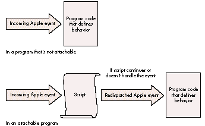
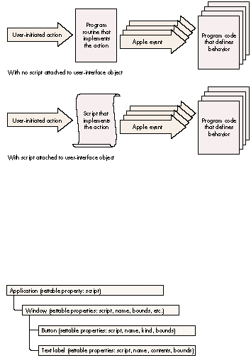
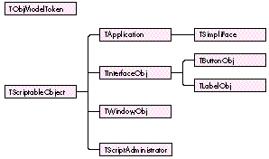

Users -- and developers -- waited a long time for the Macintosh Operating System to
support the ability to attach and run scripts as a way of customizing applications. The
Open Scripting Architecture (OSA) that's part of AppleScript finally provides the
necessary services. Now you can realize massive gains in flexibility by using
embedded scripts and can pass similar gains along to the user by making your
application OSA savvy.
Thanks to Apple's Open Scripting Architecture (OSA), an application can now be as
flexible as a set of Lego building blocks. Defining the program's high-level behavior
using scripts instead of traditional program code makes possible an unprecedented
amount of flexibility, a cause for celebration particularly among in-house developers
and developers of custom software. Want to make a change in the way your software
works? It's simple to modify the scripts that define the behavior of the objects
involved. Want to make a customized solution, using the program's components as
building blocks? Easy: just write some new scripts. Want to construct an OpenDoc part
from your program? You're already partway there.
Varying degrees of OSA support are open to your application. The OSA gives you the
ability to do the following:
Further, the OSA makes it possible for all customizable applications to present a
common set of scripting languages and dialects for users to choose from.
This article orients you to the OSA by outlining an OSA-savvy programming structure
and then describing techniques you can use to import scripts from the Script Editor,
run a script in your application, attach scripts to objects, compile and decompile
scripts, route Apple events to scripts, and handle user-interface events. The
programming structure and these techniques are demonstratedin the source code for
the sample program SimpliFace on this issue's CD. The AppleScript Software
Development Toolkit, available from APDA, contains the essential tools for OSA
development.
You need to do some preliminary setup work in your application before you can take
full advantage of the services offered by the OSA and make use of scripts. Depending on
how your application is already structured, this can mean anything from a slight
restructuring to a complete rewrite from the ground up. I'll describe the basic
requirements for an OSA-savvy program here and then show you the structure of
SimpliFace so that you can see how one looks.
THE BASIC REQUIREMENTS
The first requirement for an OSA-savvy program is that it comply with the Apple
event object model. As you probably know, this model sets out a standard way of
structuring a program so that it can be controlled from other programs and so that it's
scriptable using standard terminology familiar to the user. This model is solution
oriented (that's the crucial part) because it concentrates onwhat users do with the
application, not onhow they and the application do it. The articles "Apple Event Objects
and You" indevelop Issue 10 and "Better Apple Event Coding Through Objects"
indevelop Issue 12 provide useful information about the Apple event object model and
how to support it in your application. The Apple Event Registry is the essential
reference for standard Apple event classes and commands.
The second requirement (which isn't completely separable from the first) is that the
application be fully factored -- that is, that it separate the interface from the
operations. In a factored program, the actions that result when users choose menu
items, click buttons, and so on, generate a sequence of Apple events. When a
user-initiated action is dispatched as an Apple event, or when an external program or
script sends an Apple event, the program resolves which object the Apple event relates
to. It then passes the Apple event to the appropriate handler for that object; this
program code is responsible for the object's behavior.
When your application complies with the Apple event object model and is fully
factored, and when it publishes its scripting terminology, it's possible to make it
attachable -- that is, to make it handle and store the data involved in the process of
embedding or attaching a script. (I say "embedding a script" when I mean building one
in at the program development stage, whereas I refer to "attaching a script" when I
mean it's added or modified by the user.) And once your program enables scripts to be
attached to objects such as windows, documents, and the application object itself, these
scripts can customize the program's handling of object-model Apple events.
Scripts attached to program objects can affect the behavior of the program and its
objects in two cases. In the first case, scripts attached to objects can modify the
behavior of those objects when Apple events are resolved and handled. In the second
case, scripts attached to user-interface objects like menus and buttons can define the
sequence of Apple events that result from user-initiated actions. Both of these
mechanisms may have a place in your application. Fortunately, your application's
structure doesn't have to change much to allow scripts to customize behavior.
An attachable program can give a compiled script first crack at handling an incoming
Apple event instead of passing the event first to the handler (the program code that
defines the object's behavior). If the script handles the Apple event, the program code
doesn't get called; if the script continues the Apple event (that is, passes the message
to the script's parent object) or if it doesn't handle it, the program code gets called as
usual, as illustrated in Figure 1. If necessary, the script can modify or add to the
original parameters for the Apple event before passing it on to the program code.
For more on handling Apple events, see the description of command handlers on page
241 of the AppleScript Language Guide . *

Figure 1. Routing an Apple event
Thus, attaching scripts to objects can make the operation of your program a great deal
more flexible. But you can go even further: instead of generating Apple events by
making long-winded calls to the Apple Event Manager in response to user-initiated
actions, you can attach scripts to user-interface objects. Selection of one of these
objects then results in a script being called; the result of executing the script is that
the appropriate Apple events are sent, as illustrated in Figure 2. In the first case, the
primary reason the program makes the Apple event calls is so that the action is
recordable; in the second case, the script makes the Apple event calls anyway, so that
no extra work is required to make the action recordable, and thus the recordability
comes for free. The overhead involved in this is minimal (and it may even reduce the
bulk of program code); the increased flexibility is massive. It's not even necessary to
make these embedded scripts user changeable -- that's entirely up to you.
A SAMPLE PROGRAM: SIMPLIFACE
The sample program SimpliFace on this issue's CD demonstrates the principles just
outlined. SimpliFace is a basic scriptable and attachable user-interface builder
written in MPW C++. SimpliFace constructs scripted windows that can contain text
labels (though not editable text) and buttons. It demonstrates many of the features of
the OSA APIs, uses a lightweight C++ framework for Apple event object model
compliance, suggests a novel approach to a fully factored application, and allows
scripts to be attached to all application objects. SimpliFace has little preprogrammed
behavior; virtually everything is defined through scripts supplied by the user.

Figure 2. Generating Apple events
SimpliFace is built around a rough-and-ready C++ framework, inspired by the one
used in the Apple Shared Library Manager's sample applications. I like to use
lightweight C++ classes that don't depend on one another too much (thus aiding their
reuse), so the program structure isn't as tightly integrated as that of, say, a MacApp
program. In the spirit of other Apple sample applications, most of the error handling
has been left for later.
Figure 3 illustrates the object containment hierarchy for SimpliFace at run time.
There is one application object, which can contain zero or more window objects. Each
window object can contain button objects and/or text label objects.
Figure 3. SimpliFace's object containment hierarchy
Figure 4 shows the SimpliFace class hierarchy. All application-domain scriptable
objects derive from a TScriptableObject class (see the source file
ScriptableObjects.h) that has an attached script and is able to assist with object
resolution and Apple event handling. A TObjModelToken class (see ObjModelTokens.h)
is defined to manage token resolution and Apple event dispatching; the interaction of
these is managed from a set of static functions in the file ObjModelEvents.cp.

Figure 4. SimpliFace's class hierarchy
The application's behavior is defined in the files Application.cp and SimpliFace.cp (the
latter contains the main program function). Outside the program's object containment
hierarchy, a separate script administrator class, TScriptAdministrator, is defined.
This class is responsible for fetching the script attached to objects and preparing it
for execution, and serves to encapsulate the script-handling code. It's implemented in
the file ScriptableObjects.cp.
The window, button, and text label objects are created by sending SimpliFace
appropriate Apple events. When it receives an Apple event, SimpliFace resolves the
object that the event is aimed at (the direct parameter of the event specifies the target
object). SimpliFace then dispatches the Apple event (unless it's an Open Application,
Get Data, or Set Data event) to the script of the target object. The work for this
ishandled in the file ObjModelEvents.cp. We'll look in greater detail at how SimpliFace
handles an incoming Apple event in the section "Routing Apple Events to Scripts."
Two sample scripts written in the AppleScript language are supplied to demonstrate
SimpliFace; you can run these using the Script Editor. One is the startup script that's
run whenever SimpliFace is launched, and the other (called Test Simple Window)
creates a window that contains two buttons and a text label. Here's the latter script:
make new window ¬
with properties {name:"Tests", bounds:{60, 60, 350, 300}}
set the script of window "Tests" to winScript
open window "Tests"
make new button ¬
with properties ¬
{name:"Quit", kind:standard, bounds:{10, 50, 80, 70}} ¬
at end of window "Tests"
make new button ¬
with properties ¬
{name:"Hello", kind:standard, bounds:{10, 10, 80, 30}} ¬
at end of window "Tests"
make new text label ¬
with properties ¬
{name:"Data entry", contents:"I'm a text label!", ¬
bounds:{90, 80, 280, 130}} ¬
at end of window "Tests"
Open the SimpliFace Dictionary, using the Script Editor, to see more details of the
scripting interface.
SimpliFace doesn't store window properties or object scripts on disk, so every time
you launch it you need to set up the application script, and you must recreate all
windows and window objects. This is facilitated by the automatic loading and execution
of the startup script (called SimpliFace Startup) whenever SimpliFace is launched. To
prevent this script from running, hold down the Control and Command keys while
SimpliFace starts up. The mechanism used to run this script is described under
"Running Scripts" later in this article.
To help debug the Apple event handlers in SimpliFace, I implemented a simple debug
transcript tool. A small amount of code (borrowed from MacApp) is used to intercept
the MPW <stdio> library. The information thus captured is packaged and sent via a
private Apple event to the Debug Transcript program, which you'll find along with the
rest of SimpliFace on the CD.
The debugging mechanism is managed in the SimpliFace module DebugTrace. If you open
the Debug Transcript program before you run SimpliFace, a lot of information about
Apple events received and processed will appear in the transcript window. Apple
events are decoded in the Apple event prehandler using the AEPrint routine, part of
Jens Alfke's AEGizmos library. You can add to the information displayed simply by
adding extra printf statements to the program code.
Now that you have a general idea of how to structure an OSA-savvy program, we'll
consider the specific techniques your program can use to take advantage of the OSA's
services and enjoy the flexibility offered by using scripts. This section describes how
to import scripts from the Script Editor, run scripts from within the application,
attach scripts to objects, compile and decompile scripts, route Apple events to scripts,
and handle user-interface objects. You won't necessarily need to implement all of these
techniques in your program, but you should be aware of them so that you can decide
how you want to implement scripting.
IMPORTING SCRIPTS FROM THE SCRIPT EDITOR
Unless you have a specialized requirement and want to write your own script editor,
you'll get the best mileage by creating and compiling scripts with Apple's Script Editor
and then importing these scripts into your application. You have some choices about
how to approach importing scripts into your application:
Before we examine the technique you should use to import scripts, we need to quickly
review how the Script Editor and the OSA store scripts. AppleScript can compile
scripts in two forms: as contexts, which can contain handlers (for Apple events and
user-defined subroutines) and properties, and as ordinary compiled scripts, which
can only be executed. The Script Editor always compiles and saves scripts as script
contexts. To the OSA, compiled scripts are values and can be stored in variables and
manipulated just like numbers, text, lists, or records. When a program passes a
script value to the OSA, or when the OSA passes a script value to a program, it's
referred to through a special magic cookie called an OSAID. OSAIDs are 32-bit-long
integers, and the OSA uses an internal mechanism to map these onto the data they refer
to. The OSA provides a pair of routines that you can use to convert OSAIDs to and from
data handles you can save. OSAStore converts an OSAID into an AEDesc (Apple event
descriptor), of which the data handle portion can be saved. OSALoad does the opposite,
unpacking the contents of the data handle portion of an AEDesc (previously saved using
OSAStore) to create a new OSAID. A compiled script context that's been saved using the
OSAStore command is contained in resource number 128 of type 'scpt'
(kOSAScriptResourceType, the same constant as typeOSAGenericStorage), one of the
four resources of a Script Editor compiled script file.
The AEDesc is the basic Apple event data structure, described in Inside Macintosh:
Interapplication Communication , Chapter 3, and the earlier Inside Macintosh Volume
VI, Chapter 6. *
SimpliFace's LoadScriptFromFile routine, shown in Listing 1, imports a compiled
script from a Script Editor file; you can use it as a model regardless of which of the
three approaches outlined above you choose to take. The key tasks undertaken by this
routine (apart from locating and opening the resource fork of the script file) are
loading the resource handle, putting a reference to it into an AEDesc of type 'scpt'
(typeOSAGenericStorage), and calling OSALoad to generate an OSAID that refers to the
compiled script.
Listing 1. TScriptAdministrator::LoadScriptFromFile
OSAError TScriptAdministrator::LoadScriptFromFile(FSSpec *fileSpec,
OSAID *theScriptID)
{
short fileRef = FSpOpenResFile(fileSpec, fsRdPerm);
OSAError err = ResError();
if (err == noErr) {
Handle h = Get1Resource(kOSAScriptResourceType, 128);
if (h != nil) {
AEDesc scriptData;
scriptData.descriptorType = typeOSAGenericStorage;
scriptData.dataHandle = h;
err = OSALoad(gScriptingComponent, &scriptData,
kOSAModeNull, theScriptID);
ReleaseResource(scriptData.dataHandle);
}
CloseResFile(fileRef);
}
return err;
RUNNING SCRIPTS
Now that you've loaded the script, it can be executed. So how do you run a script in
your application? It's easy -- all you do is pass the compiled script (which can be a
script context or a simple compiled script) to the OSA routine OSAExecute. To show
how it's done, here's some code from SimpliFace that executes the startup script:
FSSpec theFileSpec;
OSAID startupScript = kOSANullScript;
// ... Set up theFileSpec here....
err = LoadScriptFromFile(&theFileSpec, &startupScript);
if (err == noErr && startupScript != kOSANullScript) {
OSAID resultID = kOSANullScript;
err = OSAExecute(gScriptingComponent, startupScript,
kOSANullScript, kOSAModeNull, &resultID);
// ... More code goes here....
The first parameter to the OSAExecute routine and all other OSA routines is the
scripting component instance. To make any OSA calls, you need to have opened a
connection to a scripting component (in this case, AppleScript) by means of the
OpenDefaultComponent call. This returns a component instance that you can save (in
this case, as gScriptingComponent) and pass to future OSA calls.
The second and third parameters to OSAExecute are both OSAIDs referring to compiled
scripts. The second parameter refers to the script to be executed and the third
parameter refers to the script context in which global variables will be bound (if the
script to be executed is a normal compiled script). Script contexts in the AppleScript
OSA component are equivalent to script objects in the AppleScript language. Whenever
a script object is compiled that contains commands in the body (not inside a handler),
these commands are collected into a default run handler (the handler that's executed
when the script object is sent the run message). The Script Editor uses this same
method to execute scripts. The run handler executes using the context to access and
store properties and global variables.
In the above fragment, we supply kOSANullScript for the third parameter because the
script we've loaded from the Script Editor file is a script context. If a script context
with a run handler is given as the second parameter to OSAExecute, the run handler is
extracted from the context and used as the compiled script. In this case, the third
parameter passed to OSAExecute is ignored.
The above code from SimpliFace executes a predefined compiled script that sets up the
initial state of the program. You can use the same technique to attach scripts directly
to menu functions or to buttons in dialog boxes and data entry forms, but I don't
recommend that because you can gain more flexibility by generating Apple events from
user actions and then letting scripts handle the events. You can also use this technique
to extend your application so that scripts are triggered when interesting events occur.
For instance, if you were writing a storage management utility you could let the user
declare timers that triggered scripts at predefined intervals or at specified times of
the day or week to perform backups and disk reorganizations.
ATTACHING SCRIPTS TO OBJECTS
Attaching a script to an application-domain object can be a simple matter of extending
the definition of the object to include a script property. The Apple Event Registry
defines a class, property, and Apple event data type for script properties. The
constants for all these have the same value: 'scpt' (typeOSAGenericStorage).
SimpliFace demonstrates how a script property can be attached to an object. As noted
earlier, all application-domain objects in SimpliFace that have an object-model
counterpart are derived from the class TScriptableObject. The definition of this class
includes a field of type OSAID called fAttachedScript, referring to the object's attached
script. Listing 2 shows the source code of the SetProperty function from the class
TScriptableObject.
Listing 2. TScriptableObject::SetProperty
OSErr TScriptableObject::SetProperty(DescType propertyID,
const AEDesc *theData)
{
OSAError err = errAEEventNotHandled;
// Used switch statement instead of if statement to allow for
// future expansion.
switch (propertyID) {
case pScript:
OSAID theValueID = kOSANullScript;
if (theData->descriptorType == typeChar
|| theData->descriptorType == typeIntlText)
err = OSACompile(gScriptingComponent, theData,
kOSAModeCompileIntoContext, &theValueID);
else // If it's not text, we assume the script is compiled.
err = OSALoad(gScriptingComponent, theData,
kOSAModeNull, &theValueID);
if (err == noErr) {
if (fAttachedScript != kOSANullScript)
OSADispose(fAttachedScript);
fAttachedScript = theValueID;
}
break;
}
return (OSErr)err;
You or the user can write an AppleScript script that sets the script property of an
object. Here's an example that sets the script property of a window object:
tell application "SimpliFace"
script myWindowScript
on close
global numTimesClosed
set numTimesClosed to numTimesClosed + 1
continue close
end close
end script
set the script of window "MyWindow" to myWindowScript
end tell
If your application is constructed so that parts of the runtime behavior are defined
using attached scripts, it becomes feasible to write other scripts that update the
application to its latest version. These scripts could even update applications across a
network. What a boon this would be to MIS departments!
COMPILING AND EXECUTING SCRIPTS
In some circumstances, your program will need to compile a script itself instead of
importing a compiled script from the Script Editor. For instance, the Do Script Apple
event lets the scripter supply the script source code as the event's direct parameter.
To handle this Apple event, your program needs to compile the source code before it
can be executed. You might also want the user to be able to set the script property of an
object by supplying the source code instead of a compiled script.
The OSA provides a routine called OSACompile that compiles script source code and
returns an OSAID. The SimpliFace function TScriptableObject::SetProperty, shown in
Listing 2, uses OSACompile.
SimpliFace uses a different routine, OSACompileExecute, to implement the Do
ScriptApple event. This is a convenience routine that compiles some script source
code and immediately executes it. Listing 3 shows DoScript, the SimpliFace function
that handles the Do Script Apple event. In this function, the AEDesc scriptDesc contains
the script to be executed. The data type is checked to see if it contains source code; if
so, the script is compiled and executed using OSACompileExecute. If a script value
result is returned by the OSA, it's coerced to an AEDesc and returned in resultDesc.
Listing 3. TScriptAdministrator::DoScript
OSAError TScriptAdministrator::DoScript(AEDesc *scriptDesc,
AEDesc *resultDesc)
{
OSAError err = errAEEventNotHandled;
if (scriptDesc != nil && (scriptDesc->descriptorType == typeChar
|| scriptDesc->descriptorType == typeIntlText)) {
OSAID resultID = kOSANullScript;
err = OSACompileExecute(gScriptingComponent, scriptDesc,
kOSANullScript, kOSAModeAlwaysInteract, &resultID);
if (err != noErr)
DumpOSAerrorInfo(gScriptingComponent, err);
else if (resultID != kOSANullScript)
err = OSACoerceToDesc(gScriptingComponent, resultID,
typeWildCard, kOSAModeNull, resultDesc);
OSADispose(gScriptingComponent, resultID);
}
return err;
}
Eagle-eyed students of the Apple Event Registry will notice that the DoScript function
doesn't implement the other standard form of the Do Script Apple event, which allows
the script to be specified by reference to a script file on disk. As discussed earlier in
the section "Importing Scripts from the Script Editor," the source code for SimpliFace
includes a mechanism to read a script from a script file, so I'll leave it to you to
modify TScriptAdministrator::DoScript.
DECOMPILING SCRIPTS
The counterpart of the Set Data Apple event is the Get Data Apple event. An attachable
application should allow scripts to get, as well as set, the script property of objects.
By default, the script property should be returned as a compiled script, but the
definition of the Get Data Apple event permits the caller to request a property as a
different data type. If this data type is text, and if the script property of an object is
being requested, your program will need to decompile the script.
The function OSAGetSource is used to extract the source code from a compiled script.
SimpliFace demonstrates the use of OSAGetSource in the GetProperty function from the
class TScriptableObject (see Listing 4). The SimpliFace Get Data handler extracts the
desired data type from the Apple event and passes it to the GetProperty function in the
parameter wantType; if the caller doesn't specify a data type, typeWildCard is used to
signify the default type for the property. If the object has an attached script,
GetProperty checks to see what data type is requested by the caller. If the data type is
text, the script is decompiled and the source code is returned. Otherwise, the compiled
script is returned as the result using the OSAStore function (the converse of OSALoad,
discussed earlier).
OSErr TScriptableObject::GetProperty(DescType propertyID,
DescType wantType, AEDesc *result)
{
OSErr err = errAEEventNotHandled;
switch (propertyID) // Used to allow for future expansion
{
case pScript:
if (fAttachedScript != kOSANullScript) {
printf("::GetProperty(): get script as type '%.4s'\n",
(char*)&wantType);
if (wantType == typeChar || wantType == typeIntlText) {
// If caller wants text, we need to decompile the
// script.
err = (OSErr)OSAGetSource(gScriptingComponent,
fAttachedScript, wantType, result);
}
else {
if (wantType == typeWildCard)
wantType = typeOSAGenericStorage;
err = (OSErr)OSAStore(gScriptingComponent,
fAttachedScript,
wantType, kOSAModeNull, result);
}
}
break;
}
return err;
Listing 4. TScriptableObject::GetProperty
ROUTING APPLE EVENTS TO SCRIPTS
As noted earlier in this article, the way to customize your application's handling of an
object-model Apple event is to pass the event to an attached script first, passing it to
the program's normal handler for that event only if the script fails to handle or
continues the event. Note that this can be done only if the attached script was compiled
as a script context; simple compiled scripts can't be used this way. The OSA provides
two functions for passing Apple event handling to script contexts: OSAExecuteEvent
returns the result of executing the script as an OSAID that you must coerce back to an
AEDesc to supply to the reply event, and OSADoEvent automatically puts the result into
the reply event.
OSADoEvent had a problem in version 1.0 of AppleScript: it never disposed of the
temporary OSAID it used to hold the result of executing the script. This could cause the
AppleScript 1.0 component to fail. The recommended workaround was to use
OSAExecuteEvent. This problem was fixed in AppleScript 1.1.*
The AppleScript language permits a message to be "continued" -- that is, passed to the
parent of the script object that's currently handling the message. The AppleScript
Continue statement is similar to the Pass statement in HyperTalk. The OSA allows your
program to get in on the act when a message is continued, by specifying a
resume/dispatch procedure (so called because it lets your program resume handling of
a continued event or dispatch an event that isn't handled in the script). To do this, you
use the OSASetResumeDispatchProc call. The resume/dispatch procedure takes the
same parameters as an Apple event handler and might be your application's default
handler for the Apple event in question. It will be called by the OSA during a call to
OSAExecuteEvent or OSADoEvent if the script continues the Apple event.
The OSA also allows you to specify another kind of resume/dispatch handling: if instead
of specifying an actual Apple event handler for the resume/dispatch procedure you
pass the special constant kOSAUseStandardDispatch or kOSADontUsePhac, and if the
script continues the handling of an Apple event, it will be dispatched directly to the
default Apple event handler for that event, ignoring any special prehandling. To make
full use of this facility, you need to implement an Apple event prehandler procedure in
your program as well.
The prehandler gets first crack at any incoming Apple event; it's called for all Apple
events that are dispatched to the application, except those that have been redispatched
by the OSA (assuming you set up resume/dispatch handling as just described). A
prehandler procedure is installed by calling the Apple Event Manager function
AEInstallSpecialHandler.
To illustrate how Apple events are routed to scripts, let's look in detail at how
SimpliFace handles an incoming Apple event.
The prehandler routine from SimpliFace is shown in Listing 5. The routine starts by
extracting the Apple event class and ID from the event record. It then checks to see if
the attached-script behavior should be ignored: SimpliFace doesn't pass the Open
Application, Get Data, and Set Data Apple events to attached scripts. The routine then
tries to resolve the direct object of the Apple event, creating a token object. If no token
is resolved, a token that refers to the application object is created. A global script
administrator object is then asked to locate and return the attached script; unless
there was no attached script, the Apple event is passed to the script by calling the
SimpliFace routine ExecuteEventInContext, which in turn calls OSADoEvent. If the
script fails to handle the Apple event, or if an error occurs, the error is returned via
the Apple Event Manager.
HANDLING USER-INTERFACE EVENTS
User-interface events, such as mouse clicks, keystrokes, and menu selections, are
handled in a special way in SimpliFace. This allows SimpliFace to delegate the behavior
of these user-interface objects to their attached scripts. User-initiated mouse and
keyboard actions are intercepted by a routine in SimpliFace.cp called
TSimpliFace::HandleEvent. This routine, in conjunction with a group of support
routines, packages and dispatches the user-initiated event as a system event. This
special kind of Apple event is dispatched to the script of the object the user clicked in,
if there is one, or the current window if not. If there's a mouse click in a text field or
button, the script for the field or button (if there is one) gets the event.
If any runtime error occurs in a script while an event is being handled, or if the
message is continued out of the last handler that caught it, or if an event isn't handled
at all, the normal behavior for that event takes place in the program code. For
instance, when a SimpliFace window is closed (either by a script's sending a Close
event or by the user's clicking in the window's close box), a Close event is dispatched
to the window's script (if it has one). If this script handles the event and returns
without error, the Close event goes no further and the window stays open. If the script
fails to handle the event or continues the Close event, the window is closed by the
default Apple event handler in the C++ program code.
Now that you have a grasp of the basic requirements of an OSA-savvy program and
know the techniques to import scripts from the Script Editor, run those scripts,
attach scripts to objects, compile and decompile scripts, route Apple events to scripts,
and handle user-interface events, you may want to go even further with your support
of the OSA. There are two issues in particular that you may want to address: how to
handle global variables so that variables can be shared between scripts, and how to
allow scripts to share libraries of subroutine handlers so that the application object's
attached script behaves something like HyperCard's stack script.
I've completed another version of SimpliFace that implements these features, and it
may be the subject of a future article indevelop -- if you clamor loudly enough for it.
Meanwhile, I've left as an exercise for you a couple of other enhancements to
SimpliFace: implementing editable text fields and making all window and button kinds
and object properties work. Roll up your sleeves and have a go at it.
Listing 5. StdAEvtPreHandler
static pascal OSErr StdAEvtPreHandler(AppleEvent *theEvent,
AppleEvent *theReply, long theRefCon)
{
OSAError err = errAEEventNotHandled;
AEEventClass theEvtClass;
AEEventID theEvtID;
DescType theType;
Size theSize;
AEDesc directParam, theTokenDesc;
OSAID theScriptID = kOSANullScript;
objModelTokenPtr theToken = nil;
Boolean madeAppToken = false;
theTokenDesc.descriptorType = typeNull;
theTokenDesc.dataHandle = nil;
// Extract the class and ID of the event from the Apple event.
AEGetAttributePtr(theEvent, keyEventClassAttr, typeType, &theType,
(Ptr) &theEvtClass, sizeof(theEvtClass),
&theSize);
AEGetAttributePtr(theEvent, keyEventIDAttr, typeType, &theType,
(Ptr) &theEvtID, sizeof(theEvtID), &theSize);
if ((theEvtClass == kCoreEventClass
&& theEvtID != kAEOpenApplication)
|| (theEvtClass == kAECoreSuite
&& theEvtID != kAESetData && theEvtID != kAEGetData)
|| (theEvtClass == kSignature
&& theEvtID == kAESystemEvent)
|| (theEvtClass == kASAppleScriptSuite
&& theEvtID == kASSubroutineEvent)) {
// Above test skips the events we don't want to be scriptable.
err = AEGetParamDesc(theEvent, keyDirectObject, typeWildCard,
&directParam);
if (err == noErr) {
err = AEResolve(&directParam, kAEIDoMinimum,
&theTokenDesc);
AEDisposeDesc(&directParam);
if (err == noErr)
theToken = ObjModelTokenFromDesc(&theTokenDesc);
}
if (err != noErr || theToken == nil) {
err = MakeAppToken((TObjModelToken**)&theToken);
madeAppToken = (err == noErr);
}
if (theToken != nil)
theScriptID =
gScriptAdministrator->GetAttachedScript(theToken
->GetTokenObj());
if (theScriptID != kOSANullScript) // Pass to script.
err = ExecuteEventInContext(theEvent, theReply, theRefCon,
theScriptID, kOSAUseStandardDispatch,
kOSADontUsePhac);
else
err = errAEEventNotHandled;
if (theToken != nil)
gScriptAdministrator->ReleaseAttachedScript
(theToken->GetTokenObj());
AEDisposeToken(&theTokenDesc);
if (madeAppToken == true) // Will be executed only
delete theToken; // if token was made locally.
}
return (OSErr)err;
}
PAUL G. SMITH (AppleLink SMITH.PG) is a developer and consultant specializing in
intelligent agent software, computer- based communications, and object-oriented
programming techniques, currently in his eleventh year of developing for the
Macintosh. He divides his time between the offices of Full Moon Software Inc. near
Cupertino, California, and his native England, where he runs a small European
consultancy called commstalk hq and lives with his wife, Steph, and his cat, Mack.
Steph leads a more glamorous life than Paul, having been a dancer in big productions
in the London West End and now making glorious hats as a fashion milliner; Mack leads
an easier life than Paul and takes a lot more naps. *
Thanks to our technical reviewers Jens Alfke, Warren Harris, Ron Karr, and Jeroen
Schalk. *